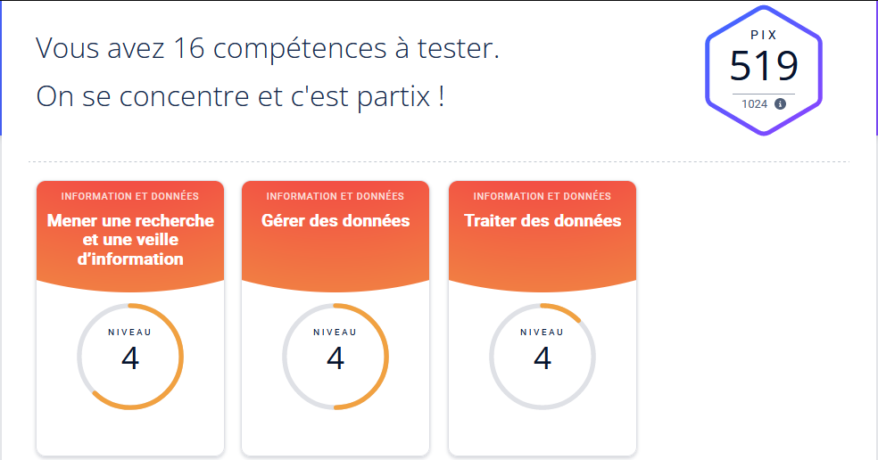
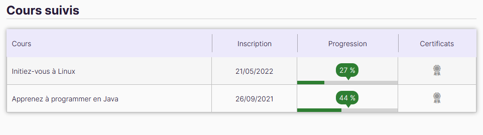
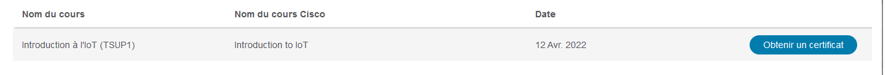
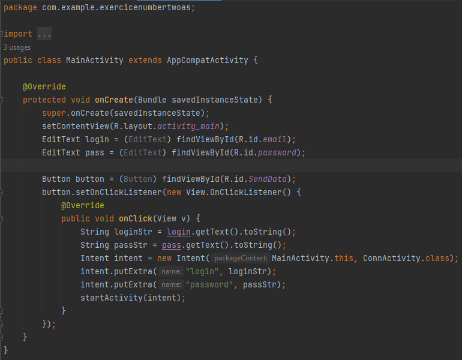
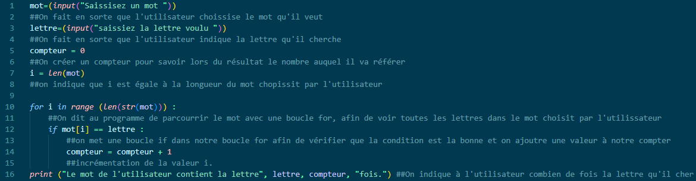
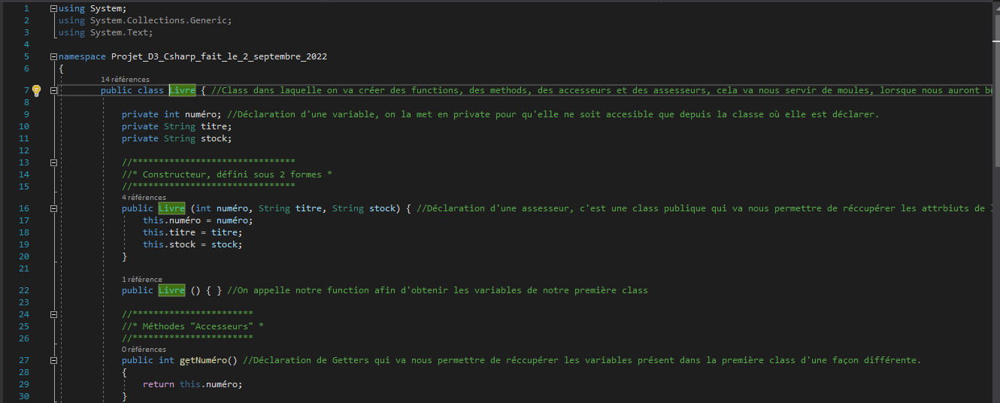
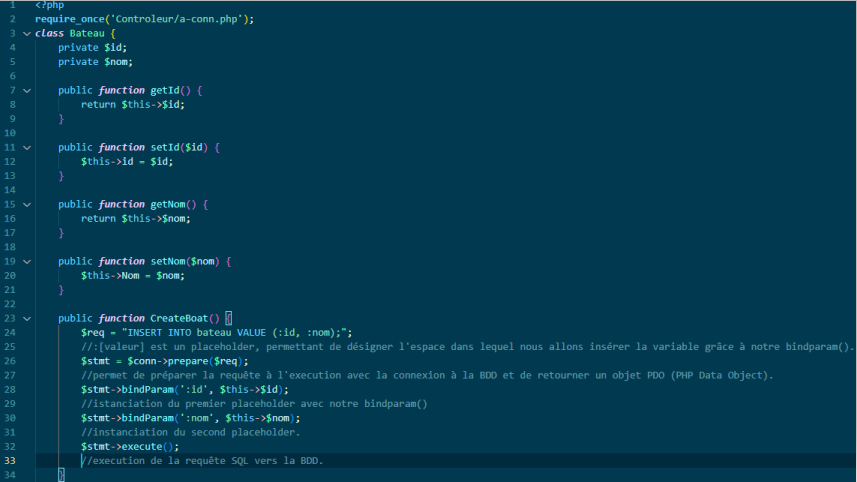
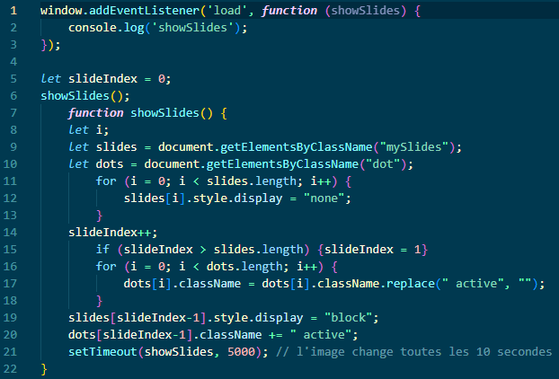
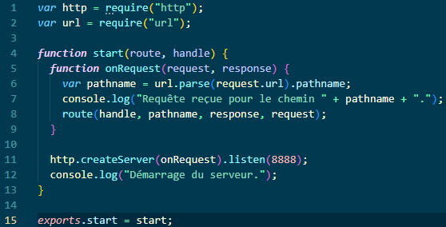
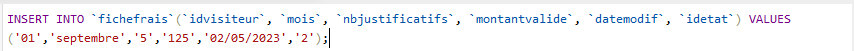

Ma Présentation :
Je m'appelle Victor Ramos. Je suis un étudiant de 20 ans, en 2ème année de BTS SIO (Services Informatiques aux Organisations) et je vais vous présenter les compétences acquises en option SLAM (Solutions Logicielles Applications Métie)rs). Je vais donc lister et détailler les langages de programmations enseignés, les projets mis en place au cours de l'année, les notions en cybersécurité présentées et diverses notions importantes relatives au BTS.
Compléments d'informations :
En raison de mon statut d'étudiant j'ai appris à m'adapater aux méthodes d'enseignement. Je suis devenu autonome au fil de mes études. Je suis aussi quelqu'un de persévérant et qui ne se décourage pas. Je m'adapte à mon environnement. Je cherche à m'améliorer et j'ai également appris à faire preuve de curiosité en dehors de mes cours reflétant mon autodidactie.

Mes certifications ...
Visualisez l'ensemble de mes certifications :
Pix : Il s'agit d'un service public français afin de permettre à ceux qui le veulent d'améliorer leurs compétences en matière d'informatique au sens large.

OpenClassroom : Ce site offre la possibilité pour toute personne qui désir se former à la programmation ou à d'autres domaines en lien avec l'informatique tel que l'apprentissage d'un système ou bien d'un framework pour développer.

Cisco Network Academy : Est à l'origine une entreprise qui à su diversifié au fur et à mesure des années, désormais acteur dans le monde ce la cybersécuriter, Cisco Network Academy propose des formation pour s'instruire sur des langages de programmation ou des concepts tel que les IoT (Internet of Things).

... Et mes apprentissages !
Visualisez l'ensemble de mes apprentissages :
Java : Langage dont la phylosophie et de pouvoir fonctionner sur différent type de système, j'ai eu la possibilité durant mes deux années de formation de m'initier au langage pour comprendre son fonctionnement en partie.

Python : Langage que j'ai pu découvrir à travers mes cours de mathématiques pour élargir mes compétences mais aussi visualiser son application dans le domaine mathématique et scientifique.

C# : Langage de programmation que j'ai étudié en partie pendant mes deux ans afin de mettre en applications de nouvelles notions et de pouvoir consolider les anciennes.

PHP Hypertext Preprocessor: Ce langage executé côté serveur m'a été enseigné durant deux an afin d'être capable de communiquer avec les serveurs pour envoyer ou recevoir des données à l'aide de mes applications web.

javascript : Langage qui s'execute côté client et qui permet de nombreuses choses tel que l'ajout de fonctionnalité grâce à des scripts pour l'application web ou bien certaines mesures de cybersécurité mineures.

NodeJS : Langage qui s'inspire de JavaScript mais celui s'execute côté serveur, j'ai appris au cours de ma seconde année à mettre en place une application web avec NodeJS fonctionnant à la manière d'un serveur.

SQL (Structured Query Langage) : Langage dont le rôle est avant tout d'assurer la communication entre client et base de données afin de pouvoir manipuler les données collectés, traités et stockés au moyen de requêtes.
